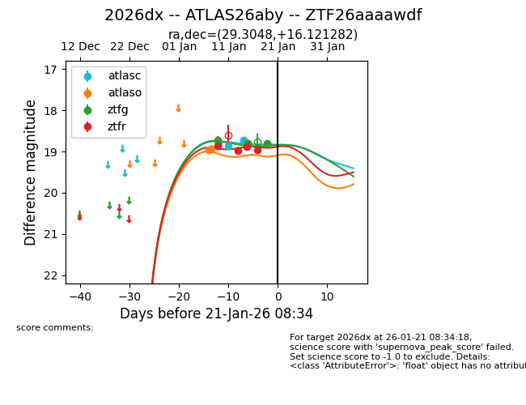
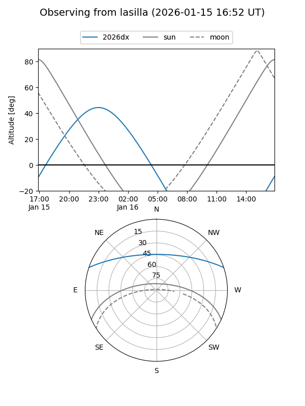
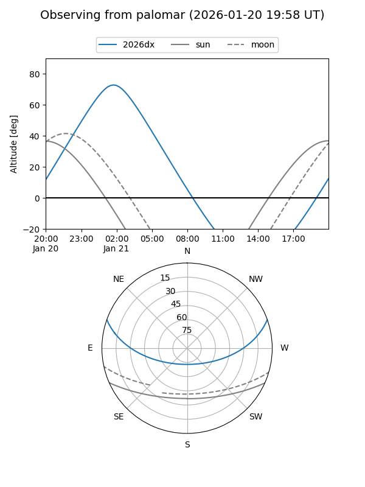
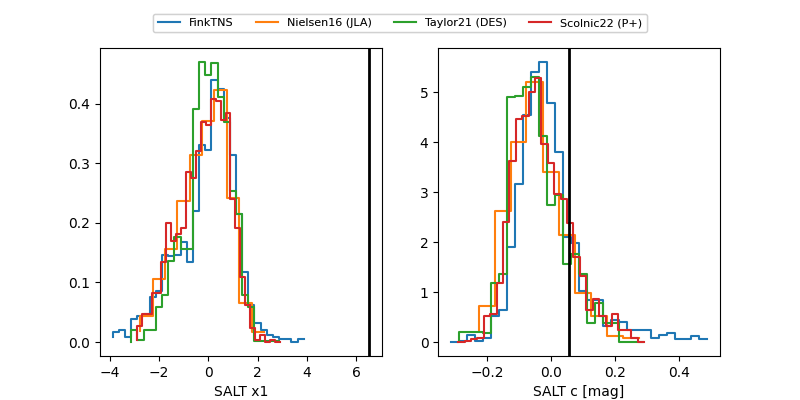

2026dx
Target 2026dx at 2026-01-21 08:36
Aliases and brokers:
FINK: link
Lasair: link
ALeRCE: link
TNS: link
YSE: link
alt names
ZTF26aaaawdf (ztf,fink_ztf)
2026dx (tns,yse)
ATLAS26aby (atlas)
Coordinates:
equatorial (ra, dec) = 29.3048,+16.12128
equatorial (HMS+DMS) = 01:57:13.14,+16:07:16.61
galactic (l, b) = (145.1072,-43.89980)
Flags:
Photometry:
last atlasc=18.73, atlaso=18.94, ztfg=18.81, ztfr=18.96
3 atlasc, 2 atlaso, 3 ztfg, 4 ztfr detections
Lightcurve

Visibility


Additional plots
